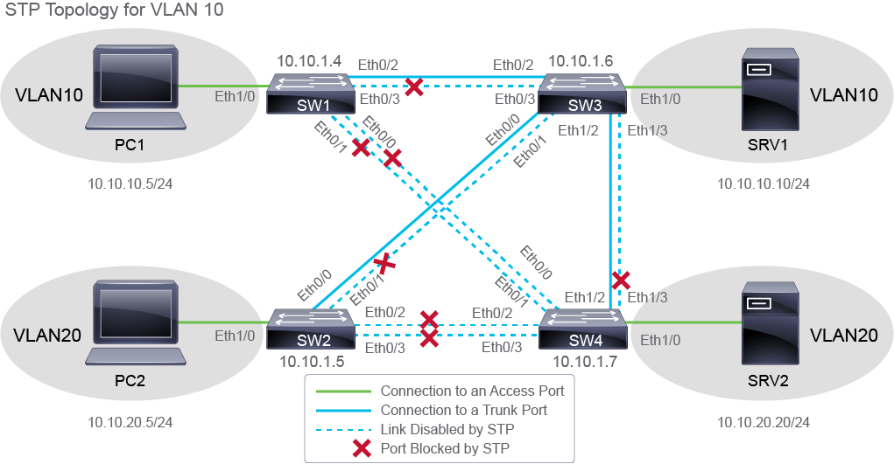
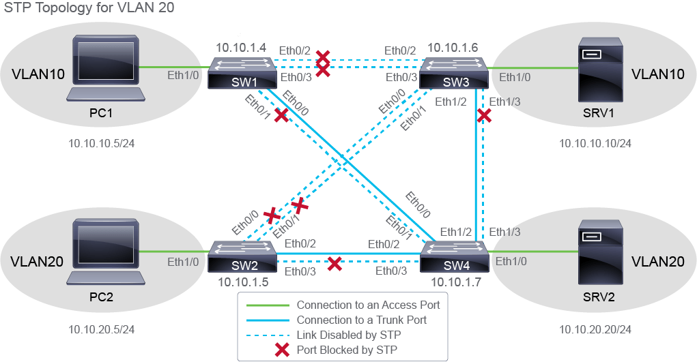
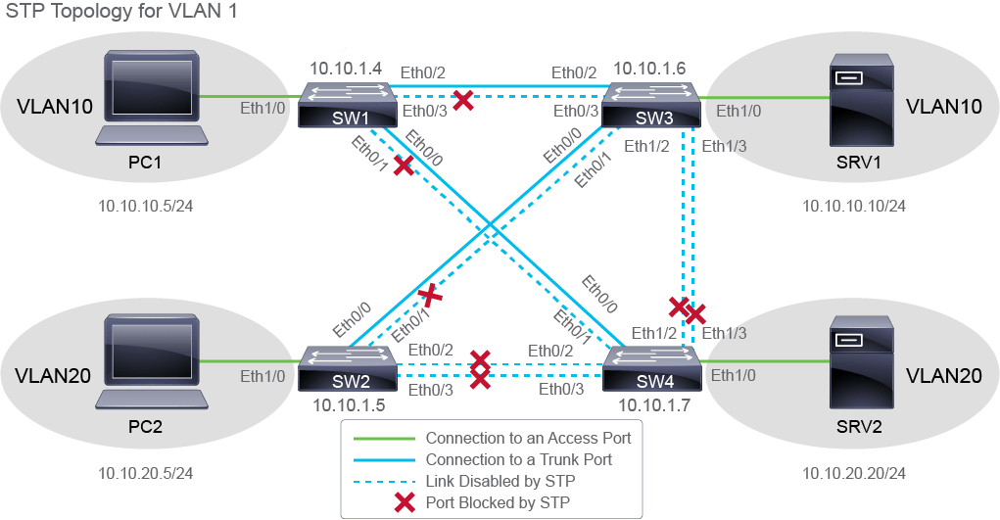

On SW1, enter the following command:
SW1# show spanning-tree vlan 10
VLAN0010
Spanning tree enabled protocol ieee
Root ID Priority 24586
Address aabb.cc00.0d00
Cost 100
Port 3 (Ethernet0/2)
Hello Time 2 sec Max Age 20 sec Forward Delay 15 sec
Bridge ID Priority 32778 (priority 32768 sys-id-ext 10)
Address aabb.cc00.0b00
Hello Time 2 sec Max Age 20 sec Forward Delay 15 sec
Aging Time 300 sec
Interface Role Sts Cost Prio.Nbr Type
------------------- ---- --- --------- -------- --------------------------------
Et0/0 Altn BLK 100 128.1 Shr
Et0/1 Altn BLK 100 128.2 Shr
Et0/2 Root FWD 100 128.3 Shr
Et0/3 Altn BLK 100 128.4 Shr
Et1/0 Desg FWD 100 128.5 Shr
Note
The MAC addresses might differ in your output.
The output you are seeing displays STP-related information for VLAN 10. The VLAN0010 ‘title’ indicates that you are seeing STP information only for VLAN 10, which is named VLAN0010.
The first part of the output provides two blocks of similar information; the first block gives information about the root switch, and the second block gives information about the switch you are administering. The STP information for the root switch provides the STP priority and MAC address, the STP cost to the root switch, root port identifier (on your switch), and the STP timers. When the switch you are administering is the root switch, in place of the cost and port identifier, you will see the phrase This bridge is the root. As you can see from the output, SW1 is not the root switch.
The second block of information provides STP priority and MAC address, STP timers, and aging time for the switch you are administering.
The second part of the output is the table showing interface STP information, in particular STP role, STP status, STP cost, STP interface priority, and STP type, for all interfaces that are part of the VLAN that you specified in the command.
Both Eternet0/2 and 0/3 connect to SW3, but only Ethernet0/2 is forwarding traffic. The STP is blocking Ethernet0/3 to prevent a loop. Only half of the potential bandwidth in this pair of links is in use. Ethernet 0/0 and Ethernet 0/1 interfaces are both in the blocking state. They are not forwarding traffic. All interfaces have STP cost of 100.
To determine the resulting STP topology for VLAN 10, you need to examine the STP information on other switches also.
To identify the root switch in the topology, follow the direction in which the Root port is facing. In this case, the Root port is Etherent0/2 facing toward SW3. On SW3, enter the show spanning-tree vlan 10 command.
SW3# show spanning-tree vlan 10
VLAN0010
Spanning tree enabled protocol ieee
Root ID Priority 24586
Address aabb.cc01.2100
This bridge is the root
Hello Time 2 sec Max Age 20 sec Forward Delay 15 sec
Bridge ID Priority 24586 (priority 24576 sys-id-ext 10)
Address aabb.cc01.2100
Hello Time 2 sec Max Age 20 sec Forward Delay 15 sec
Aging Time 300 sec
Interface Role Sts Cost Prio.Nbr Type
------------------- ---- --- --------- -------- --------------------------------
Et0/0 Desg FWD 100 128.1 Shr
Et0/1 Desg FWD 100 128.2 Shr
Et0/2 Desg FWD 100 128.3 Shr
Et0/3 Desg FWD 100 128.4 Shr
Et1/0 Desg FWD 100 128.5 Shr
Et1/2 Desg FWD 100 128.7 Shr
Et1/3 Desg FWD 100 128.8 Shr
Notice the previously mentioned This bridge is the root message—you have discovered the root switch. Also notice that none of the interfaces have the Root role, they are all designated ports, which is another indicator that you have discovered the root switch.
After you examine STP information for VLAN 10 on all the switches, the resulting topology should look like the one in the following figure.

Also, examine the STP configuration for other VLANs and determine the STP topology for VLAN 20 and VLAN 1. For your reference, these two STP topologies are also shown below.
